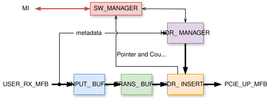
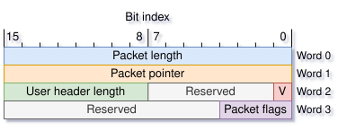
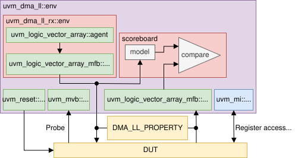

RX DMA Calypte
The RX DMA Calypte controller is a standalone component of the DMA Calypte module, designed for transferring packet data in the F2H (FPGA-to-Host) direction. The block diagram below illustrates its internal architecture:
{kind=link}

Schematic view of the internal blocks within the RX DMA Calypte controller
The controller accepts packets on the USER_RX_MFB bus and generates PCIe transactions on its
output, the PCIE_UP_MFB bus. Each packet is segmented into 128-byte transactions that are
dispatched as individual PCIe transactions. This 128-byte segment size has been selected as a
compromise between high throughput and low latency. While future modifications to the segment size
are possible, they will not affect the entity’s port configuration.
- ENTITY RX_DMA_CALYPTE IS
- Generics
PortsGeneric
Type
Default
Description
DEVICE
string
“ULTRASCALE”
MI_WIDTH
natural
32
USER_RX_MFB_REGIONS
natural
1
User Logic MFB configuration
USER_RX_MFB_REGION_SIZE
natural
8
USER_RX_MFB_BLOCK_SIZE
natural
8
USER_RX_MFB_ITEM_WIDTH
natural
8
PCIE_UP_MFB_REGIONS
natural
2
PCIe MFB configuration (Requester Request interface)
PCIE_UP_MFB_REGION_SIZE
natural
1
PCIE_UP_MFB_BLOCK_SIZE
natural
8
PCIE_UP_MFB_ITEM_WIDTH
natural
32
CHANNELS
natural
8
Total number of DMA Channels, each with its separate buffers in the host memory.
POINTER_WIDTH
natural
16
Width of Software and Hardware Descriptor/Header Pointer
Defines width of signals used for these values in DMA Module
Affects logic complexity
Maximum value: 32 (restricted by size of pointer MI registers)
SW_ADDR_WIDTH
natural
64
Width of RAM address
CNTRS_WIDTH
natural
64
Actual width of packet and byte counters
HDR_META_WIDTH
natural
24
Width of application metadata transported within the DMA headers. In bits.
PKT_SIZE_MAX
natural
2**16 - 1
Maximum size of a packet in bytes.
Defines width of Packet length signals.
Maximum allowed value is 2**16 - 1
TRBUF_REG_EN
boolean
FALSE
Enables a register in the transaction buffer that improves throughput (but increases latency by one clock period).
PERF_CNTR_EN
boolean
FALSE
Enables performance counters in the design for metrics.
Port
Type
Mode
Description
CLK
std_logic
in
RESET
std_logic
in
=====
MI interface for SW access
=====
=====
MI_ADDR
std_logic_vector(MI_WIDTH-1 downto 0)
in
MI_DWR
std_logic_vector(MI_WIDTH-1 downto 0)
in
MI_BE
std_logic_vector(MI_WIDTH/8-1 downto 0)
in
MI_RD
std_logic
in
MI_WR
std_logic
in
MI_DRD
std_logic_vector(MI_WIDTH-1 downto 0)
out
MI_ARDY
std_logic
out
MI_DRDY
std_logic
out
=====
User MFB interface
=====
Receives packets from the application logic
USER_RX_MFB_META_HDR_META
std_logic_vector(HDR_META_WIDTH-1 downto 0)
in
USER_RX_MFB_META_CHAN
std_logic_vector(log2(CHANNELS)-1 downto 0)
in
USER_RX_MFB_DATA
std_logic_vector(USER_RX_MFB_REGIONS*USER_RX_MFB_REGION_SIZE*USER_RX_MFB_BLOCK_SIZE*USER_RX_MFB_ITEM_WIDTH-1 downto 0)
in
USER_RX_MFB_SOF
std_logic_vector(USER_RX_MFB_REGIONS - 1 downto 0)
in
USER_RX_MFB_EOF
std_logic_vector(USER_RX_MFB_REGIONS - 1 downto 0)
in
USER_RX_MFB_SOF_POS
std_logic_vector(USER_RX_MFB_REGIONS*max(1, log2(USER_RX_MFB_REGION_SIZE))-1 downto 0)
in
USER_RX_MFB_EOF_POS
std_logic_vector(USER_RX_MFB_REGIONS*max(1, log2(USER_RX_MFB_REGION_SIZE*USER_RX_MFB_BLOCK_SIZE))-1 downto 0)
in
USER_RX_MFB_SRC_RDY
std_logic
in
USER_RX_MFB_DST_RDY
std_logic
out
Control/Status Registers
To enable software control, the controller utilizes an address space with configuration/status (C/S) registers. Currently, each channel has its own register space, each having a size of 128 bytes. The first channel’s registers are located at address 0x00, the second at 0x80, the third at 0x100, and so on. These registers are connected to the MI bus. The C/S register set for one channel is shown in the following table:
Address |
Name |
Access permission (FPGA/Host) |
Description |
|---|---|---|---|
0x00 |
Control |
R/W |
Bit 0: Set to 1 to request the enable of a channel; set to 0 to request a stop. |
0x04 |
Status |
W/R |
Bit 0: Set to 1 if a channel is enabled; 0 if disabled. |
0x08 |
-Reserved- |
N/A |
- |
0x0C |
-Reserved- |
N/A |
- |
0x10 |
Software data pointer (SDP) |
R/W |
Read pointer for data (up to 16 bits). |
0x14 |
Software header pointer (SHP) |
R/W |
Read pointer for headers (up to 16 bits) |
0x18 |
Hardware data pointer (HDP) |
W/R |
Write pointer for data (up to 16 bits) |
0x1C |
Hardware header pointer (HHP) |
W/R |
Write pointer for headers (up to 16 bits) |
0x20 |
-Reserved- |
N/A |
- |
0x24 |
-Reserved- |
N/A |
- |
0x28 |
-Reserved- |
N/A |
- |
0x2C |
-Reserved- |
N/A |
- |
0x30 |
-Reserved- |
N/A |
- |
0x34 |
-Reserved- |
N/A |
- |
0x38 |
-Reserved- |
N/A |
- |
0x3C |
-Reserved- |
N/A |
- |
0x40 |
Data baseL |
R/W |
Base addres of the data buffer in a host memory (lower 32 bits). |
0x44 |
Data baseH |
R/W |
Base addres of the data buffer in a host memory (upper 32 bits). |
0x48 |
Header baseL |
R/W |
Base addres of the header buffer in a host memory (lower 32 bits). |
0x4C |
Header baseH |
R/W |
Base addres of the header buffer in a host memory (upper 32 bits). |
0x50 |
-Reserved- |
N/A |
- |
0x54 |
-Reserved- |
N/A |
- |
0x58 |
Data pointer mask (DPM) |
R/W |
Determines the data buffer size |
0x5C |
Header pointer mask (HPM) |
R/W |
Determines the header buffer size |
0x60 |
Received packetsL |
W/RW (Strobe) |
Counter of received packets (lower part) |
0x64 |
Received packetsH |
W/RW (Strobe) |
Counter of received packets (upper part) |
0x68 |
Received bytesL |
W/RW (Strobe) |
Counter of received bytes (lower part) |
0x6C |
Received bytesH |
W/RW (Strobe) |
Counter of received bytes (upper part) |
0x70 |
Discarded packetsL |
W/RW (Strobe) |
Counter of discarded packets (lower part) |
0x74 |
Discarded packetsH |
W/RW (Strobe) |
Counter of discarded packets (upper part) |
0x78 |
Discarded bytesL |
W/RW (Strobe) |
Counter of discarded bytes (lower part) |
0x7C |
Discarded bytesH |
W/RW (Strobe) |
Counter of discarded bytes (upper part) |
Note
Counter registers have a strobe functionality that requires specific writes to manipulate a counter’s register from the host:
- 0b0:
Resets all counters and its register
- 0b1:
Samples all counters to their respective registers
- 0b10:
Combination of the two previous, i.e. sample the values of all counters to their registers and put counters to reset.
Write to one counter register affects all counters as well as their registers. This ensures value coherency between the counters.
Start sequence
The Control and Status registers are the most important ones in terms of ensuring the channel’s activity. When a start of a channel is requested, several registers need to be initialized from the MI bus:
The DataBaseL, DataBaseH, HeaderBaseL and HeaderBaseH registers need to contain valid addresses that were previously reserved in the host memory. This memory needs to be initialized as DMA-able.
The SDP and SHP pointer registers need to be initialized to 0.
Finally, a write of value
0b1to the Control register is issued. This immediately starts the required channel that responds by setting the Status register to1b1. The controller is now ready to transmit application data.
Stop sequence
If a stop of a channel is requested, the 0b0 value is written to its Control
register. The controller completes the dispatch of a currently processed packet
(if there is any for this channel) and waits for the software to process all of
the packets on this channel. This is indicated by an update of SDP and SHP
registers to newer values which are now equal to the HDP and HHP registers. This
signifies the successful stop sequence and the controller indicates this by
setting the Status register of the stopped channel to 0b0. The stopped
channel does not forward any incoming data and drops them (however, every other
enabled channel can still send its data to the host memory).
Note
Although many channels can be deactivated at once from the software, the controller deactivates them sequentially. This also applies to the execution of the start sequence.
Data transmission
The data transmission occurs over one or multiple channels using the shared MFB bus. Every incoming packet is accompanied by an index of a channel processing this packet, the length of application metadata which allows to distinguish a user header that precedes the packet data, and application-specific flags [1]. These fields get separated from the packet data when entering the F2H controller.
In the INPUT_BUFFER, every packet is aligned to the beginning of a bus word. This
simplifies the buffering in the TRANS_BUFFER that gathers bus words in order
to form the 128 B segments [2]. This results in 4 words or 2 words in total
for 256-bit or 512-bit bus, respectively (see
Supported PCIe Configurations). The buffered segment is prepended with a
PCIe header in the HDR_INSERTOR component and dispatched to the PCIe domain
with the address of the channel’s Data buffer. The component dispatches
every other segment in the same way while updating the HDP register value. After
the packet has ended and the last segment has been sent, the HDR_INSERTOR sends the
last PCIe transaction containing the DMA Header that indicates the delivery
of a packet in the host memory. The DMA Headers are stored in a separate Header
Buffer within each channel. When the controller sends the DMA Header
transaction, the value of the HHP register is updated. The software driver
periodically polls the position of a current head pointer (the value of SHP) in
the header buffer until it captures valid data. The format of the DMA header can
be seen in the following figure:
{kind=link}

A DMA header is used by the SW to identify a received packet. The header is 64 B long and comprises four fields. The Valid bit (marked V) is set to 1 when dispatched from the controller and then periodically polled by the SW that then recognizes a new header in the header buffer. The User header length and Packet flags fields get copied from the metadata of a packet upon entering the controller.
The HDR_MANAGER component accepts the incoming packet metadata and generates PCIe
headers as well as the DMA header for each packet with the information on whether a
packet is to be dropped or not. A necessary Flow control mechanism is
established by the pairs of read/write pointers (SDP with HDP and SHP with HHP)
and if the software is not able to read data fast enough (e.g. the HDP
catches up with the SDP), the HDR_MANAGER pauses the generation of PCIe
headers for the current packet, thus stopping the transmission from
HDR_INSERTOR as well. This is the only case of transaction blocking in the
F2H controller.
Upon header/data access, the SW updates the SDP and SHP values in the channel’s C/S
register space. These registers are located in the SW_MANAGER
component along with packet counters for each channel. This component also handles the
proper execution of the start and the stop sequence. The HDR_INSERTOR
increments the appropriate packet counter upon dispatching the DMA header of a packet when
the channel is active or when receiving the end of a packet when the channel is
inactive.
UVM Verification
The verification is supplied using the UVM framework with random input/output sequences and a UVM register layer.
{kind=link}

The structural diagram of the UVM verification environment. Green blocks are the classes of the UVM library. The Probe input is used to sample the value of the packet discard signal that indicates if a packet needs to dropped or not.
Local Subcomponents
Footnotes